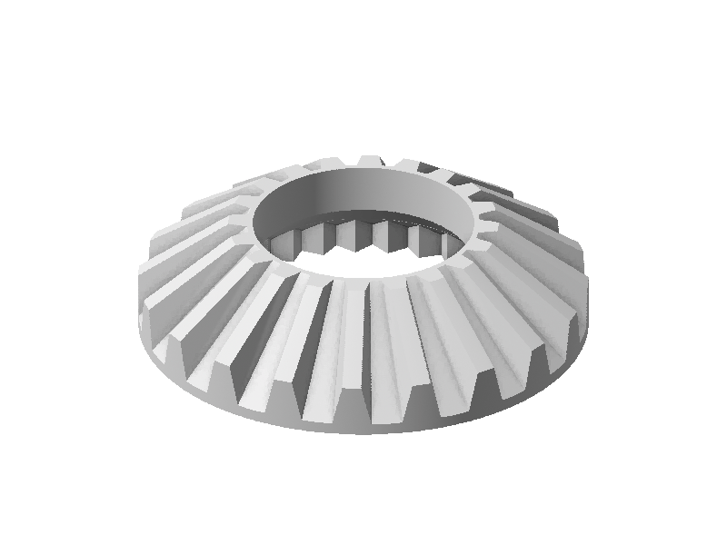
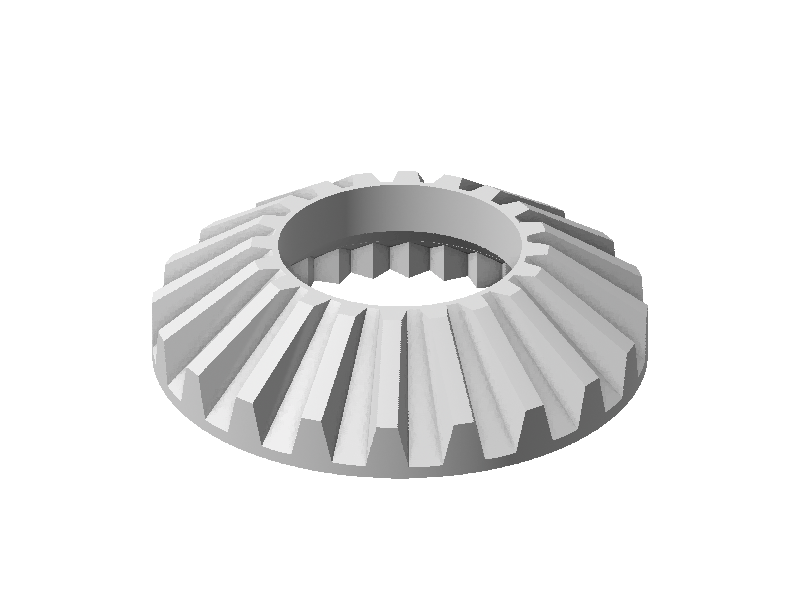
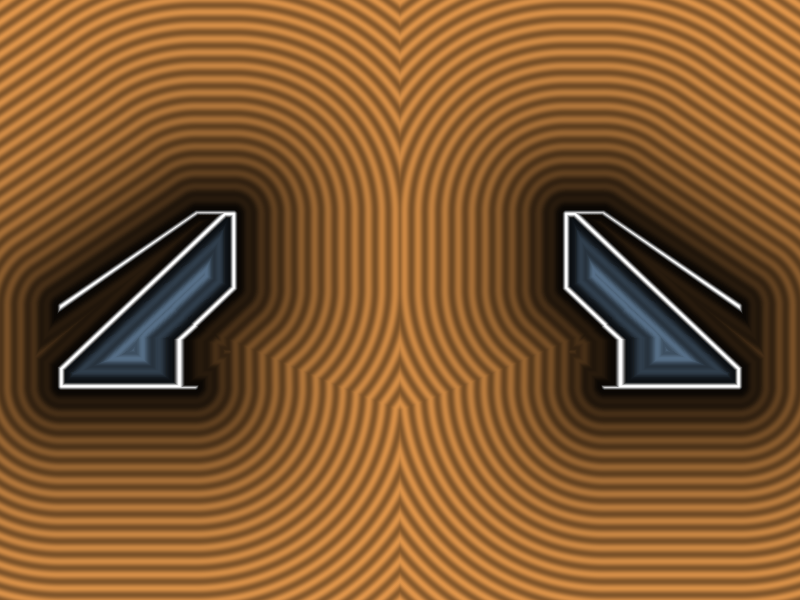

singer720_hook_drive_gear
Drafted with AI, not yet reviewed
by Reimods/singer720_hook_drive_gear.scad
sdf-native the tooth gaps are planes through their corners, the spline a star
Replacement hook drive gear for a Singer 720 sewing machine: a ring of 20 outer teeth on a revolved body, and a 27-tooth spline in its bore.
Ported from src/mods/singer720_hook_drive_gear.scad. Differences:
- Each outer tooth gap is the original’s hexahedron as the intersection of its faces’ planes.
- Round parts are round, where the original has 180 facets (0.002 mm in between corners).
- Compared with the original: within 0.0044 mm.



Files
Source
// Replacement hook drive gear for a Singer 720 sewing machine: a ring of 20 // outer teeth on a revolved body, and a 27-tooth spline in its bore. // // Ported from src/mods/singer720_hook_drive_gear.scad. Differences: // - Each outer tooth gap is the original's hexahedron as the intersection // of its faces' planes. // - Round parts are round, where the original has 180 facets (0.002 mm in // between corners). // idiom sdf-native: the tooth gaps are planes through their corners, the spline a star // --- Body --- // The cross-section of the gear's ring, revolved. let body = polygon([ [13.75, 0], [13.75, 3.25], [8.25, 7], [6.75, 7], [6.75, 4], [8.33, 2.5], [8.33, 0], ]).revolve(); // --- Outer teeth --- // The gap between two teeth: a hexahedron, from a wide end at the rim's // foot to a narrow one at the top of the bore. OpenSCAD lists a face's // corners clockwise seen from outside, and plane_through takes them // anticlockwise, so each face's corners go in reversed. The two slanted // sides are not flat, a corner 0.064 off the plane of the other three; // OpenSCAD splits each into two triangles, along D-H and C-E, that meet // at an outward fold, so each side is two planes. const A = [18.4, -2.25, 0]; const B = [18.4, 2.25, 0]; const C = [14.5, 1, 0]; const D = [14.5, -1, 0]; const E = [8.25, 0.8, 7.1]; const F = [7, 0.33, 7.1]; const G = [7, -0.33, 7.1]; const H = [8.25, -0.8, 7.1]; let gap = intersection([ plane_through(A, C, B), plane_through(D, F, C), plane_through(G, E, F), plane_through(H, B, E), plane_through(A, H, D), plane_through(D, H, G), plane_through(C, E, B), plane_through(C, F, E), ]); // --- Spline --- // 27 teeth inside the bore, a point on +Y, their outline cut by a cone // that narrows from the bore's foot up to the shoulder. let spline = star(27, [9.5, 8.5]).rotate_z(90).extrude([0, 3]); let taper = polygon([[-9.5, 0], [9.5, 0], [9.5, 1.5], [6.75, 4], [-6.75, 4], [-9.5, 1.5]]).revolve(); let gear = body .difference(gap.repeat_polar(20)) .difference(spline.intersection(taper).move([0, 0, -0.1])); draw(gear);